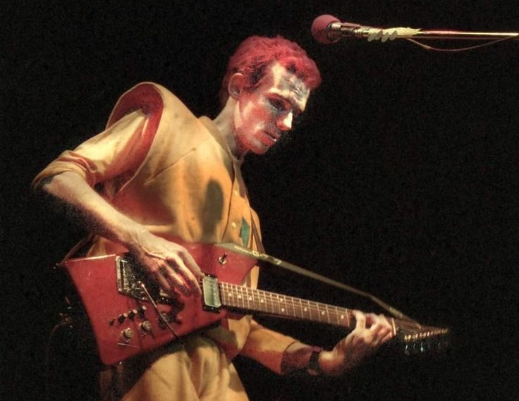
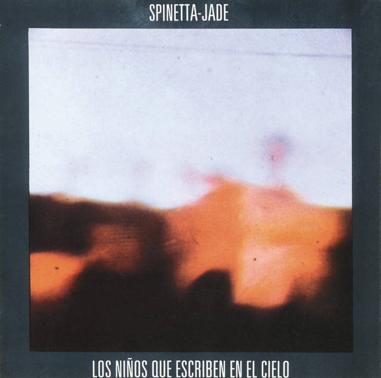
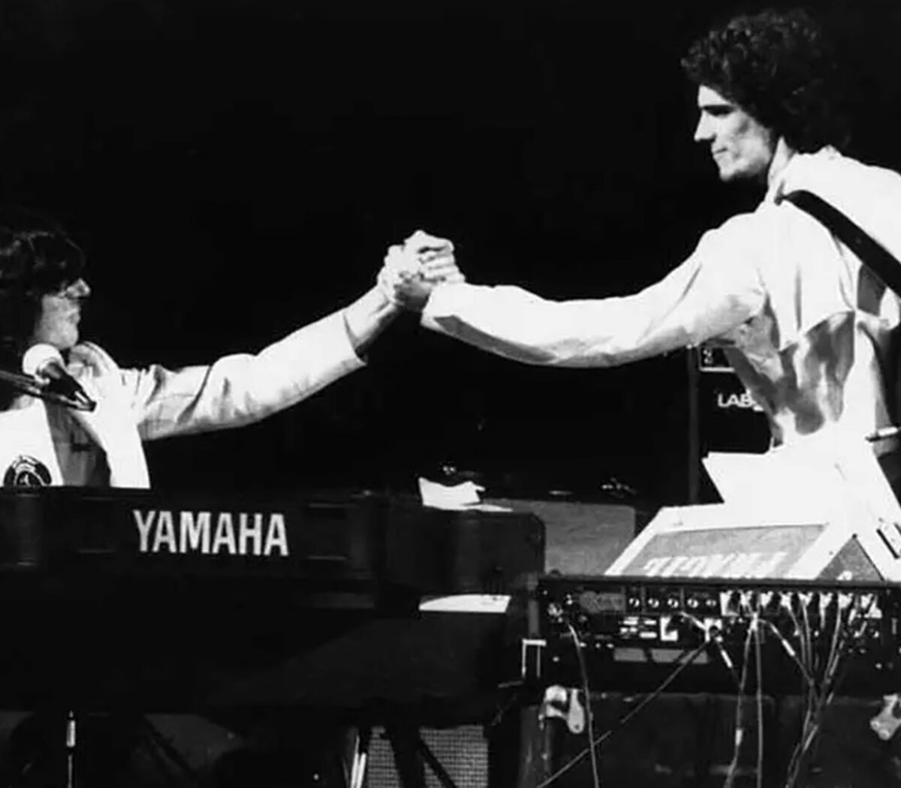

1er Disco de estudio:
Alma de Diamante

2do Disco de estudio:
Los Niños que Escriben en el Cielo
3er Disco de estudio:
Bajo Belgrano
4to Disco de estudio:
Madre en Años Luz
Historia de Spinetta Jade
La primera formación de Spinetta Jade estuvo integrada por el propio Spinetta (guitarra y voz), Juan del Barrio (teclados) -propuesto por Pomo, que venía de M.I.A. y Sr. Zutano-, Lito Vitale (teclados) -que también venía de M.I.A.-, Pedro Aznar (bajo) -que estaba en Seru Giran- y Pomo Lorenzo (batería) -que venía de Sr. Zutano y había integrado Invisible y con Spinetta arma inicialmente la banda.
La banda traía la novedad de tocar con dos teclados, algo inusual en el medio musical argentino y representaba una evolución en el sonido jazz rock que venía trabajando Spinetta desde 1976, con el fin de imprimirle un giro hacia la canción y el pop.
Al comienzo de Spinetta Jade, Spinetta estaba también ocupado con el regreso de Almendra, con la que estaba preparando el álbum El valle interior, y era consciente de que se trataba aún de una formación provisoria.Por esa razón Aznar y Vitale integraron la formación inicial como músicos invitados para el debut, el 3 de mayo de 1980, en el Estadio Obras Sanitarias.
“Yo pienso que no hay ninguna persona que sea determinante del sonido de un grupo. Aparte creo que en nosotros hay una gran libertad que permite que cada músico ponga su color y no influya demasiado en la coloratura general. Jade no es solo un grupo de rock, sino que tocamos muchas músicas. No es un conjunto en un sentido cartesiano, donde se juntan cuatro tipos que son fanáticos de la misma onda. (…) Es un collage libre en el cual las proposiciones individuales tienen que ver con la fuerza de cada uno y la familiaridad que tengan con la música”
Luis Alberto Spinetta.

Charly García con Seru Giran y Luis Alberto Spinetta con Spinetta Jade en 1980, Estadio Obras.
Spinetta y García en el concierto de las Bandas Eternas en 2010, Estadio Jose Amalfitani.